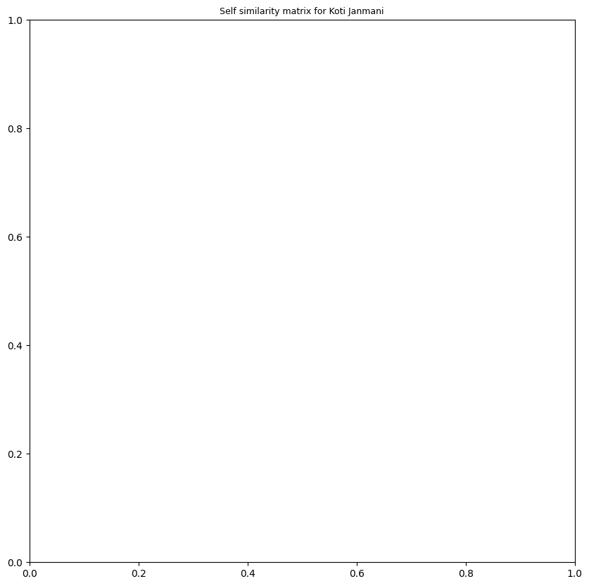
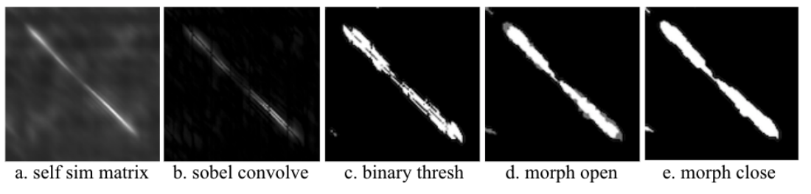
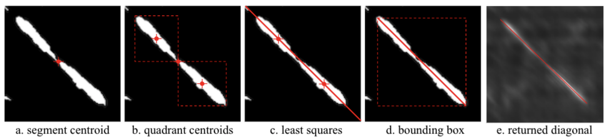

Melodic pattern dicovery#
Melodic pattern discovery is a core task within the melodic analysis of Indian Art Music, most of the approaches building on top of time-series of pitch [GSIS15a, GSIS16, GSIS15b, IDBM13, RRG+14]. In fact, [VK18] reviews the melodic recognition task in Carnatic Music and concludes that using pitch data drives to better performance. On the same line, a musically-relevant statistical analysis of melodic patterns is proposed in [VAM17], aiming at providing a more handy representation of this important aspect for Carnatic and Hindustani Music.
More recently, the task of melodic pattern discovery has been approached taking advantage of DL techniques by combining the learnt features from a complex autoencoder and an attention-based vocal pitch extraction model [NPRPS22a]. Multiple design choices of this entire process are informed by tradition characteristics.
## Installing (if not) and importing compiam to the project
import importlib.util
if importlib.util.find_spec('compiam') is None:
## Bear in mind this will only run in a jupyter notebook / Collab session
%pip install compiam
import compiam
# Import extras and supress warnings to keep the tutorial clean
import os
import numpy as np
from pprint import pprint
import warnings
warnings.filterwarnings('ignore')
---------------------------------------------------------------------------
RuntimeError Traceback (most recent call last)
RuntimeError: module compiled against ABI version 0x1000009 but this version of numpy is 0x2000000
---------------------------------------------------------------------------
ImportError Traceback (most recent call last)
Cell In [1], line 6
3 if importlib.util.find_spec('compiam') is None:
4 ## Bear in mind this will only run in a jupyter notebook / Collab session
5 get_ipython().run_line_magic('pip', 'install compiam')
----> 6 import compiam
8 # Import extras and supress warnings to keep the tutorial clean
9 import os
File /opt/hostedtoolcache/Python/3.11.14/x64/lib/python3.11/site-packages/compiam/__init__.py:6
2 import mirdata
4 from importlib import import_module
----> 6 from compiam import melody, rhythm, structure, timbre
7 from compiam.dunya import Corpora
8 from compiam.data import models_dict, datasets_list, WORKDIR
File /opt/hostedtoolcache/Python/3.11.14/x64/lib/python3.11/site-packages/compiam/melody/__init__.py:17
15 from compiam.melody import pitch_extraction
16 from compiam.melody import raga_recognition
---> 17 from compiam.melody import pattern
20 # Show user the available tasks
21 def list_tasks():
File /opt/hostedtoolcache/Python/3.11.14/x64/lib/python3.11/site-packages/compiam/melody/pattern/__init__.py:7
4 from compiam.data import models_dict
6 from compiam.melody.pattern.sancara_search import CAEWrapper
----> 7 from compiam.melody.pattern.sancara_search.extraction.self_sim import (
8 self_similarity,
9 segmentExtractor,
10 )
11 from compiam.melody.pattern.sancara_search.extraction.evaluation import (
12 load_annotations,
13 to_aeneas,
14 evaluate,
15 )
18 # Show user the available tools
File /opt/hostedtoolcache/Python/3.11.14/x64/lib/python3.11/site-packages/compiam/melody/pattern/sancara_search/extraction/self_sim.py:10
7 from scipy.spatial.distance import pdist, squareform
8 from scipy.signal import convolve2d
---> 10 from compiam.melody.pattern.sancara_search.extraction.img import (
11 remove_diagonal,
12 convolve_array,
13 binarize,
14 diagonal_gaussian,
15 apply_bin_op,
16 make_symmetric,
17 edges_to_contours,
18 )
19 from compiam.utils import create_if_not_exists, run_or_cache
21 from compiam.melody.pattern.sancara_search.extraction.sequence import (
22 convert_seqs_to_timestep,
23 remove_below_length,
24 add_center_to_mask,
25 )
File /opt/hostedtoolcache/Python/3.11.14/x64/lib/python3.11/site-packages/compiam/melody/pattern/sancara_search/extraction/img.py:3
1 import numpy as np
----> 3 import cv2
5 from scipy import signal
6 from scipy import misc
File /opt/hostedtoolcache/Python/3.11.14/x64/lib/python3.11/site-packages/cv2/__init__.py:181
176 if DEBUG: print("Extra Python code for", submodule, "is loaded")
178 if DEBUG: print('OpenCV loader: DONE')
--> 181 bootstrap()
File /opt/hostedtoolcache/Python/3.11.14/x64/lib/python3.11/site-packages/cv2/__init__.py:153, in bootstrap()
149 if DEBUG: print("Relink everything from native cv2 module to cv2 package")
151 py_module = sys.modules.pop("cv2")
--> 153 native_module = importlib.import_module("cv2")
155 sys.modules["cv2"] = py_module
156 setattr(py_module, "_native", native_module)
File /opt/hostedtoolcache/Python/3.11.14/x64/lib/python3.11/importlib/__init__.py:126, in import_module(name, package)
124 break
125 level += 1
--> 126 return _bootstrap._gcd_import(name[level:], package, level)
ImportError: numpy.core.multiarray failed to import
Sañcara search#
In this walkthrough we demonstrate the task of repeated melodic motif identification in Carnatic Music. The methodologies used are presented in [NPRPS22a] and [PRNP+23] for which compIAM repository serves as the most up to date and well-maintained implementation.
In the compIAM documentation we can see that the tool we showcase in this page has torch as a dependency for the DL models.
%pip install torch
1. Data#
This notebook works with a performance from the Saraga Carnatic Dataset. This performance audio is not provided alongside this notebook as part of the compIAM package but can be downloaded manually following the instructions in the Access section of the provided link. Although we encourage the reader to try with their own Carnatic performance audio.
audio_path = os.path.join("..", "audio", "pattern_finding", "Koti Janmani.multitrack-vocal.mp3") # path to audio
raga = 'ritigaula' # carnatic raga
---------------------------------------------------------------------------
NameError Traceback (most recent call last)
Cell In [3], line 1
----> 1 audio_path = os.path.join("..", "audio", "pattern_finding", "Koti Janmani.multitrack-vocal.mp3") # path to audio
2 raga = 'ritigaula' # carnatic raga
NameError: name 'os' is not defined
2. Pitch processing#
2.1 Predominant pitch extraction#
Owing to the the coarticulation (merging) of svaras through gamakas, musically salient units in Carnatic Music are often better characterised by continuous time series pitch data rather than transcription to symbolic notation [NPRPS22b, Pea16].
However, Carnatic Music constitutes a difficult case for vocal pitch extraction – although performances place strong emphasis on a monophonic melodic line from the soloist singer, heterophonic melodic elements also occur, for example from the accompanying violinist who shadows the melody of the soloist often at a lag and with variation. In addition, there are the sounds of the tanpura (plucked lute that creates an oscillating drone) and pitched percussion instruments [PRNP+23].
Here we use a pretrained FTA-Net model for the task. This is provided with the compIAM package via the compiam.load_model() function. The model is an attention-based network that leverages and fuses information from the frequency and periodicity domains to capture the correct pitch values for the predominant source. It learns to focus on this source by using an additional branch that helps reduce the false alarm rate (detecting pitch values that do not correspond to the source we target) [YSYL21].
This FTANet instance is trained on the Saraga Carnatic Melody Synth dataset (SMCS), a dataset including more than 1000 minutes of time-aligned and continuous vocal melody annotations for the Carnatic music tradition [PRNP+23]. See also the FTANet-Carnatic walkthrough in this tutorial.
ftanet = compiam.load_model("melody:ftanet-carnatic")
Extracting the vocal pitch track:
pitch_track = ftanet.predict(audio_path)
pitch = pitch_track[:,1] # Pitch in Hz
time = pitch_track[:,0] # Time in seconds
timestep = time[2]-time[1] # time in seconds between elements of pitch track
We can interpolate small silences to account for minor errors in the pitch exrraction process, typically caused by glottal sounds and sudden decrease of pitch salience in gamakas [NPRPS22b].
from compiam.utils.pitch import interpolate_below_length
pitch = interpolate_below_length(
pitch, # track to interpolate
0, # value to interpolate
350*0.001/timestep # maximum gap in number sequence elements to interpolate for
)
---------------------------------------------------------------------------
NameError Traceback (most recent call last)
Cell In [7], line 2
1 pitch = interpolate_below_length(
----> 2 pitch, # track to interpolate
3 0, # value to interpolate
4 350*0.001/timestep # maximum gap in number sequence elements to interpolate for
5 )
NameError: name 'pitch' is not defined
2.2 Visualising predominant pitch#
We can plot our pitch track using the visualisation tools in compiam.visualisation
from compiam.visualisation.pitch import plot_pitch, flush_matplotlib
from compiam.utils import ipy_audio
---------------------------------------------------------------------------
RuntimeError Traceback (most recent call last)
RuntimeError: module compiled against ABI version 0x1000009 but this version of numpy is 0x2000000
---------------------------------------------------------------------------
ImportError Traceback (most recent call last)
Cell In [8], line 1
----> 1 from compiam.visualisation.pitch import plot_pitch, flush_matplotlib
2 from compiam.utils import ipy_audio
File /opt/hostedtoolcache/Python/3.11.14/x64/lib/python3.11/site-packages/compiam/__init__.py:6
2 import mirdata
4 from importlib import import_module
----> 6 from compiam import melody, rhythm, structure, timbre
7 from compiam.dunya import Corpora
8 from compiam.data import models_dict, datasets_list, WORKDIR
File /opt/hostedtoolcache/Python/3.11.14/x64/lib/python3.11/site-packages/compiam/melody/__init__.py:17
15 from compiam.melody import pitch_extraction
16 from compiam.melody import raga_recognition
---> 17 from compiam.melody import pattern
20 # Show user the available tasks
21 def list_tasks():
File /opt/hostedtoolcache/Python/3.11.14/x64/lib/python3.11/site-packages/compiam/melody/pattern/__init__.py:7
4 from compiam.data import models_dict
6 from compiam.melody.pattern.sancara_search import CAEWrapper
----> 7 from compiam.melody.pattern.sancara_search.extraction.self_sim import (
8 self_similarity,
9 segmentExtractor,
10 )
11 from compiam.melody.pattern.sancara_search.extraction.evaluation import (
12 load_annotations,
13 to_aeneas,
14 evaluate,
15 )
18 # Show user the available tools
File /opt/hostedtoolcache/Python/3.11.14/x64/lib/python3.11/site-packages/compiam/melody/pattern/sancara_search/extraction/self_sim.py:10
7 from scipy.spatial.distance import pdist, squareform
8 from scipy.signal import convolve2d
---> 10 from compiam.melody.pattern.sancara_search.extraction.img import (
11 remove_diagonal,
12 convolve_array,
13 binarize,
14 diagonal_gaussian,
15 apply_bin_op,
16 make_symmetric,
17 edges_to_contours,
18 )
19 from compiam.utils import create_if_not_exists, run_or_cache
21 from compiam.melody.pattern.sancara_search.extraction.sequence import (
22 convert_seqs_to_timestep,
23 remove_below_length,
24 add_center_to_mask,
25 )
File /opt/hostedtoolcache/Python/3.11.14/x64/lib/python3.11/site-packages/compiam/melody/pattern/sancara_search/extraction/img.py:3
1 import numpy as np
----> 3 import cv2
5 from scipy import signal
6 from scipy import misc
ImportError: numpy.core.multiarray failed to import
We want to accompany pitch plots with audio so load raw audio too.
# let's load the audio also
import librosa
sr = 44100 # sampling_rate
audio, _ = librosa.load(audio_path,sr=sr)
---------------------------------------------------------------------------
NameError Traceback (most recent call last)
Cell In [9], line 4
2 import librosa
3 sr = 44100 # sampling_rate
----> 4 audio, _ = librosa.load(audio_path,sr=sr)
NameError: name 'audio_path' is not defined
t1 = 304 # in seconds
t2 = 324 # in seconds
t1s = round(t1/timestep) # in sequence elements
t2s = round(t2/timestep) # in sequence elements
---------------------------------------------------------------------------
NameError Traceback (most recent call last)
Cell In [10], line 3
1 t1 = 304 # in seconds
2 t2 = 324 # in seconds
----> 3 t1s = round(t1/timestep) # in sequence elements
4 t2s = round(t2/timestep) # in sequence elements
NameError: name 'timestep' is not defined
this_pitch = pitch[t1s:t2s]
this_time = time[t1s:t2s]
---------------------------------------------------------------------------
NameError Traceback (most recent call last)
Cell In [11], line 1
----> 1 this_pitch = pitch[t1s:t2s]
2 this_time = time[t1s:t2s]
NameError: name 'pitch' is not defined
plot_pitch(this_pitch, this_time, title='Excerpt of Koti Jamani by The Akkarai Sisters')
ipy_audio(audio, t1, t2, sr=sr)
---------------------------------------------------------------------------
NameError Traceback (most recent call last)
Cell In [12], line 1
----> 1 plot_pitch(this_pitch, this_time, title='Excerpt of Koti Jamani by The Akkarai Sisters')
2 ipy_audio(audio, t1, t2, sr=sr)
NameError: name 'plot_pitch' is not defined
The plot is OK but we could definitely make it more interpretable. First of all, since silences are represented as 0Hz in our predominant pitch track, the interpolationm between points creates large drops to 0 for these regions. We can pass a binary mask to plot_pitch to tell it not to plot certain areas. In this case we want this mask to be 1 when there is non-silence (non-zero) and 1 otherwise:
silence_mask = this_pitch==0
---------------------------------------------------------------------------
NameError Traceback (most recent call last)
Cell In [13], line 1
----> 1 silence_mask = this_pitch==0
NameError: name 'this_pitch' is not defined
plot_pitch(this_pitch, this_time, mask=silence_mask, title='Excerpt of Koti Jamani by The Akkarai Sisters')
ipy_audio(audio, t1, t2, sr=sr)
---------------------------------------------------------------------------
NameError Traceback (most recent call last)
Cell In [14], line 1
----> 1 plot_pitch(this_pitch, this_time, mask=silence_mask, title='Excerpt of Koti Jamani by The Akkarai Sisters')
2 ipy_audio(audio, t1, t2, sr=sr)
NameError: name 'plot_pitch' is not defined
Pitch is often thought about in terms of it’s relationship to the tonic (Sa), which we can quantify using cents. A tonic identifier is provided in compiam.melody, or alternatively the tonic may be provided precomputed in the Saraga Dataset.
from compiam.melody import tonic_identification
---------------------------------------------------------------------------
RuntimeError Traceback (most recent call last)
RuntimeError: module compiled against ABI version 0x1000009 but this version of numpy is 0x2000000
---------------------------------------------------------------------------
ImportError Traceback (most recent call last)
Cell In [15], line 1
----> 1 from compiam.melody import tonic_identification
File /opt/hostedtoolcache/Python/3.11.14/x64/lib/python3.11/site-packages/compiam/__init__.py:6
2 import mirdata
4 from importlib import import_module
----> 6 from compiam import melody, rhythm, structure, timbre
7 from compiam.dunya import Corpora
8 from compiam.data import models_dict, datasets_list, WORKDIR
File /opt/hostedtoolcache/Python/3.11.14/x64/lib/python3.11/site-packages/compiam/melody/__init__.py:17
15 from compiam.melody import pitch_extraction
16 from compiam.melody import raga_recognition
---> 17 from compiam.melody import pattern
20 # Show user the available tasks
21 def list_tasks():
File /opt/hostedtoolcache/Python/3.11.14/x64/lib/python3.11/site-packages/compiam/melody/pattern/__init__.py:7
4 from compiam.data import models_dict
6 from compiam.melody.pattern.sancara_search import CAEWrapper
----> 7 from compiam.melody.pattern.sancara_search.extraction.self_sim import (
8 self_similarity,
9 segmentExtractor,
10 )
11 from compiam.melody.pattern.sancara_search.extraction.evaluation import (
12 load_annotations,
13 to_aeneas,
14 evaluate,
15 )
18 # Show user the available tools
File /opt/hostedtoolcache/Python/3.11.14/x64/lib/python3.11/site-packages/compiam/melody/pattern/sancara_search/extraction/self_sim.py:10
7 from scipy.spatial.distance import pdist, squareform
8 from scipy.signal import convolve2d
---> 10 from compiam.melody.pattern.sancara_search.extraction.img import (
11 remove_diagonal,
12 convolve_array,
13 binarize,
14 diagonal_gaussian,
15 apply_bin_op,
16 make_symmetric,
17 edges_to_contours,
18 )
19 from compiam.utils import create_if_not_exists, run_or_cache
21 from compiam.melody.pattern.sancara_search.extraction.sequence import (
22 convert_seqs_to_timestep,
23 remove_below_length,
24 add_center_to_mask,
25 )
File /opt/hostedtoolcache/Python/3.11.14/x64/lib/python3.11/site-packages/compiam/melody/pattern/sancara_search/extraction/img.py:3
1 import numpy as np
----> 3 import cv2
5 from scipy import signal
6 from scipy import misc
ImportError: numpy.core.multiarray failed to import
#tonicExt = tonic_identification.TonicIndianMultiPitch()
tonic = 195.99
Passing this tonic to plot_pitch converts the plotted curve to cents:
plot_pitch(this_pitch, this_time, mask=silence_mask, tonic=tonic, cents=True, title='Excerpt of Koti Jamani by The Akkarai Sisters')
ipy_audio(audio, t1, t2, sr=sr)
---------------------------------------------------------------------------
NameError Traceback (most recent call last)
Cell In [17], line 1
----> 1 plot_pitch(this_pitch, this_time, mask=silence_mask, tonic=tonic, cents=True, title='Excerpt of Koti Jamani by The Akkarai Sisters')
2 ipy_audio(audio, t1, t2, sr=sr)
NameError: name 'plot_pitch' is not defined
Finally we go one step further and replace the cents ticks on the y-axis with the expected svaras for this raga, plotted at their theoretical pitch positions on an equal tempered scale.
For a growing list of ragas, these theoretical svara:pitch mappings are available from compiam.utils.get_svara_pitch_carnatic.
from compiam.utils import get_svara_pitch_carnatic
It is not uncommon to observe variations in how raga names (and more broadly, Indian Art Music terms) are transliterated from their original Indian language to latin-script. This makes it difficult to create key value mappings using these terms. If an unknown raga is passed to get_svara_pitch_carnatic, a list of closest matches are suggested as alternatives (if any exists).
get_svara_pitch_carnatic(raga)
---------------------------------------------------------------------------
NameError Traceback (most recent call last)
Cell In [19], line 1
----> 1 get_svara_pitch_carnatic(raga)
NameError: name 'raga' is not defined
Passing the tonic returns these pitches in Hz, else they are returned in cents:
svara_pitch = get_svara_pitch_carnatic('ritigowla', tonic=tonic)
---------------------------------------------------------------------------
ValueError Traceback (most recent call last)
Cell In [20], line 1
----> 1 svara_pitch = get_svara_pitch_carnatic('ritigowla', tonic=tonic)
File /opt/hostedtoolcache/Python/3.11.14/x64/lib/python3.11/site-packages/compiam/utils/__init__.py:122, in get_svara_pitch_carnatic(raga, tonic)
121 def get_svara_pitch_carnatic(raga, tonic=None):
--> 122 svara_pitch = get_svara_pitch(
123 raga, tonic, svara_cents_carnatic_path, svara_lookup_carnatic_path
124 )
125 return svara_pitch
File /opt/hostedtoolcache/Python/3.11.14/x64/lib/python3.11/site-packages/compiam/utils/__init__.py:138, in get_svara_pitch(raga, tonic, svara_cents_path, svara_lookup_path)
136 if close:
137 error_message += f" Nearest matches: {close}"
--> 138 raise ValueError(error_message)
140 arohana = svara_lookup[raga]["arohana"]
141 avorohana = svara_lookup[raga]["avorohana"]
ValueError: Raga, ritigowla not available in conf. Nearest matches: ['ritigaula']
svara_pitch
---------------------------------------------------------------------------
NameError Traceback (most recent call last)
Cell In [21], line 1
----> 1 svara_pitch
NameError: name 'svara_pitch' is not defined
plot_pitch accepts alternative y ticks in the format y-values:label.
plot_pitch(this_pitch, this_time, mask=silence_mask, tonic=tonic, yticks_dict=svara_pitch, cents=True, title='Excerpt of Koti Jamani by The Akkarai Sisters')
ipy_audio(audio, t1, t2, sr=sr)
---------------------------------------------------------------------------
NameError Traceback (most recent call last)
Cell In [22], line 1
----> 1 plot_pitch(this_pitch, this_time, mask=silence_mask, tonic=tonic, yticks_dict=svara_pitch, cents=True, title='Excerpt of Koti Jamani by The Akkarai Sisters')
2 ipy_audio(audio, t1, t2, sr=sr)
NameError: name 'plot_pitch' is not defined
It should be noted that Carnatic music does not use the equal tempered scale, and indeed that the same svara position, e.g., R2, may be deliberately placed slightly differently in different ragas. Therefore, any deviation here from those theoretical pitch positions does not indicate an error in intonation, but more likely reflects correct musical practice in the style or slight errors in the automated calculation of the tonic.
3. Melodic pattern analysis#
Another important feature of the style is the structural and expressive significance of motifs and phrases known as sañcāras, which can be defined as coherent segments of melodic movement that follow the grammar of the rāga [Pes09, Vis77]. These melodic patterns are the means through which the character of the rāga is expressed and form the basis of various improvisatory and compositional formats in the style [IDBM13, Vis77]. There exists no definitive lists of all possible sañcāras in each rāga, rather the body of existing compositions and the living oral tradition of rāga performance act as repositories for that knowledge [NPRPS22a].
Certain characteristics of Carnatic Music (some of which it shares with many traditions around the world) make the task of identifying repeated motifs and phrases in Carnatic music performances particuarly difficult, particularly in how certain motifs and phrases are often performed across occurrences with variations in tempo, pitch and ornamentation.
We return to Koti Janmani for the pattern analysis.
from compiam.utils.pitch import pitch_seq_to_cents
pitch_cents = pitch_seq_to_cents(pitch, tonic=tonic)
---------------------------------------------------------------------------
NameError Traceback (most recent call last)
Cell In [24], line 1
----> 1 pitch_cents = pitch_seq_to_cents(pitch, tonic=tonic)
NameError: name 'pitch' is not defined
3.1 Melodic feature extraction#
To identify repeated melodic patterns in our audio we use melodic features computed for windows across the entirety of the track and use the pairwise similarity between these to identify regions of consistent high-similarity… in theory corresponding to melodic repetitions.
In principle, any set of features can be used in this section. The extent to which these features capture the aspects of melody we care about will define their usefulness for the task.
Here we use melodic features extracted using a Complex Autoencoder (CAE). Mapping signals onto complex basis functions learnt by the CAE results in a magnitude space that has proven to achieve state-of-the-art results in repeared section discovery for audio [LAD19].
The CAE we use here is provided via compiam.load_models and has been trained on the entirety of the Carnatic Saraga dataset for which we have multitrack recordings.
# Pattern Extraction for a Given Audio
from compiam import load_model
# Feature Extraction
# CAE features
cae = load_model("melody:cae-carnatic")
Extracting features across the entirety of our chosen audio…
# returns magnitude and phase
ampl, _ = cae.extract_features(audio_path)
ampl
---------------------------------------------------------------------------
NameError Traceback (most recent call last)
Cell In [26], line 2
1 # returns magnitude and phase
----> 2 ampl, _ = cae.extract_features(audio_path)
3 ampl
NameError: name 'cae' is not defined
3.2 Self similarity#
We want to compute the pairwsie self similarity between all combinations of features. With some Carnatic performances lasting up to over an hour, this can often be an expensive computation. There are many regions of the track that we are not interested in (such as silence), or that serve as plausible segmentation points for repeated melodic patterns (such as long periods of stability/silence).
compiam.melody.pattern.self_similarity provides a method of computing the self similarity whilst skipping the computation for regions defined by a user specified exclusion mask.
from compiam.melody.pattern import self_similarity
---------------------------------------------------------------------------
RuntimeError Traceback (most recent call last)
RuntimeError: module compiled against ABI version 0x1000009 but this version of numpy is 0x2000000
---------------------------------------------------------------------------
ImportError Traceback (most recent call last)
Cell In [27], line 1
----> 1 from compiam.melody.pattern import self_similarity
File /opt/hostedtoolcache/Python/3.11.14/x64/lib/python3.11/site-packages/compiam/__init__.py:6
2 import mirdata
4 from importlib import import_module
----> 6 from compiam import melody, rhythm, structure, timbre
7 from compiam.dunya import Corpora
8 from compiam.data import models_dict, datasets_list, WORKDIR
File /opt/hostedtoolcache/Python/3.11.14/x64/lib/python3.11/site-packages/compiam/melody/__init__.py:17
15 from compiam.melody import pitch_extraction
16 from compiam.melody import raga_recognition
---> 17 from compiam.melody import pattern
20 # Show user the available tasks
21 def list_tasks():
File /opt/hostedtoolcache/Python/3.11.14/x64/lib/python3.11/site-packages/compiam/melody/pattern/__init__.py:7
4 from compiam.data import models_dict
6 from compiam.melody.pattern.sancara_search import CAEWrapper
----> 7 from compiam.melody.pattern.sancara_search.extraction.self_sim import (
8 self_similarity,
9 segmentExtractor,
10 )
11 from compiam.melody.pattern.sancara_search.extraction.evaluation import (
12 load_annotations,
13 to_aeneas,
14 evaluate,
15 )
18 # Show user the available tools
File /opt/hostedtoolcache/Python/3.11.14/x64/lib/python3.11/site-packages/compiam/melody/pattern/sancara_search/extraction/self_sim.py:10
7 from scipy.spatial.distance import pdist, squareform
8 from scipy.signal import convolve2d
---> 10 from compiam.melody.pattern.sancara_search.extraction.img import (
11 remove_diagonal,
12 convolve_array,
13 binarize,
14 diagonal_gaussian,
15 apply_bin_op,
16 make_symmetric,
17 edges_to_contours,
18 )
19 from compiam.utils import create_if_not_exists, run_or_cache
21 from compiam.melody.pattern.sancara_search.extraction.sequence import (
22 convert_seqs_to_timestep,
23 remove_below_length,
24 add_center_to_mask,
25 )
File /opt/hostedtoolcache/Python/3.11.14/x64/lib/python3.11/site-packages/compiam/melody/pattern/sancara_search/extraction/img.py:3
1 import numpy as np
----> 3 import cv2
5 from scipy import signal
6 from scipy import misc
ImportError: numpy.core.multiarray failed to import
First let’s compute the mask corresponding to regions we do not want to compute, these are regions of silence:
silence_mask = pitch==0
---------------------------------------------------------------------------
NameError Traceback (most recent call last)
Cell In [28], line 1
----> 1 silence_mask = pitch==0
NameError: name 'pitch' is not defined
And regions of consistent stability. To identify regions of consistent stability we use compiam.utils.pitch.extract_stability_mask. extract_stability_mask computes the average deviation of pitch from the mean in a series of windows across the track. If the deviation exceeds a certain threshold for a sufficient number of consecutive windows, the area is marked as stable (1 in the returned mask), else 0.
from compiam.utils.pitch import extract_stability_mask
stability_mask = extract_stability_mask(
pitch=pitch_cents, # pitch track
min_stab_sec=1.0, # minimum cummulative length of stable windows to warrant annotation
hop_sec=0.2, # hop length in seconds
var=60, # minimum variation from the mean in each window to be considered stable
timestep=timestep # time in seconds between consecutice elements in <pitch>
)
---------------------------------------------------------------------------
NameError Traceback (most recent call last)
Cell In [30], line 2
1 stability_mask = extract_stability_mask(
----> 2 pitch=pitch_cents, # pitch track
3 min_stab_sec=1.0, # minimum cummulative length of stable windows to warrant annotation
4 hop_sec=0.2, # hop length in seconds
5 var=60, # minimum variation from the mean in each window to be considered stable
6 timestep=timestep # time in seconds between consecutice elements in <pitch>
7 )
NameError: name 'pitch_cents' is not defined
We can inspect the result to check it has worked correctly
t1 = 304 # in seconds
t2 = t1 + 10 # in seconds
t1s = round(t1/timestep) # in sequence elements
t2s = round(t2/timestep) # in sequence elements
this_pitch = pitch[t1s:t2s]
this_time = time[t1s:t2s]
this_silence_mask = silence_mask[t1s:t2s]
this_stable_mask = stability_mask[t1s:t2s]
# get pitch plot
fig, ax = plot_pitch(this_pitch, this_time, mask=this_silence_mask, tonic=tonic, yticks_dict=svara_pitch, cents=True, title='Excerpt of Koti Jamani by The Akkarai Sisters')
# On alternative axis plot stable mask values
ax2 = ax.twinx()
ax2.plot(this_time, this_stable_mask, 'g', linewidth=1, alpha=1, linestyle='--')
ax2.set_yticks([0,1])
ax2.set_ylabel("Is stable region?")
# accompanying audio
ipy_audio(audio, t1, t2, sr=sr)
---------------------------------------------------------------------------
NameError Traceback (most recent call last)
Cell In [31], line 4
1 t1 = 304 # in seconds
2 t2 = t1 + 10 # in seconds
----> 4 t1s = round(t1/timestep) # in sequence elements
5 t2s = round(t2/timestep) # in sequence elements
7 this_pitch = pitch[t1s:t2s]
NameError: name 'timestep' is not defined
Here the green line is to be read from the right-hand y-axis… is the region stable or not?
Looks good! Let’s combine the two masks:
import numpy as np
exclusion_mask = np.logical_or(silence_mask==1, stability_mask==1)
---------------------------------------------------------------------------
NameError Traceback (most recent call last)
Cell In [32], line 2
1 import numpy as np
----> 2 exclusion_mask = np.logical_or(silence_mask==1, stability_mask==1)
NameError: name 'silence_mask' is not defined
And compute the self similarity self_similarity():
# Mask of regions not interested in cite kaustuv, the papers that use
ss = self_similarity(
ampl, # features
exclusion_mask=exclusion_mask, # exclusion mask
timestep=timestep, # time in seconds between elements of exlcusion mask
hop_length=cae.hop_length, # window size in audio frames
sr=cae.sr # sample rate of audio
)
# Sparsely computed self similarity matrix
X = ss[0]
# Mapping of index between theoretical full matrix and sparse one
orig_sparse_lookup = ss[1]
# Mapping of index between sparse matrix and theoretical full matrix one
sparse_orig_lookup = ss[2]
# Indices of boundaries between split regions in full matrix
boundaries_orig = ss[3]
# Indices of boundaries between split regions in sparse matrix
boundaries_sparse = ss[4]
---------------------------------------------------------------------------
NameError Traceback (most recent call last)
Cell In [33], line 2
1 # Mask of regions not interested in cite kaustuv, the papers that use
----> 2 ss = self_similarity(
3 ampl, # features
4 exclusion_mask=exclusion_mask, # exclusion mask
5 timestep=timestep, # time in seconds between elements of exlcusion mask
6 hop_length=cae.hop_length, # window size in audio frames
7 sr=cae.sr # sample rate of audio
8 )
10 # Sparsely computed self similarity matrix
11 X = ss[0]
NameError: name 'self_similarity' is not defined
How does the self similarity matrix look?
import matplotlib.pyplot as plt
fig, ax = plt.subplots(figsize=(10,10))
plt.title(f'Self similarity matrix for Koti Janmani', fontsize=9)
ax.imshow(X[2000:5000,2000:5000], interpolation='nearest')
plt.axis('off')
plt.tight_layout()
plt.show()
---------------------------------------------------------------------------
NameError Traceback (most recent call last)
Cell In [35], line 3
1 fig, ax = plt.subplots(figsize=(10,10))
2 plt.title(f'Self similarity matrix for Koti Janmani', fontsize=9)
----> 3 ax.imshow(X[2000:5000,2000:5000], interpolation='nearest')
4 plt.axis('off')
5 plt.tight_layout()
NameError: name 'X' is not defined

3.3 Segment extraction#
Diagonal segments in this self similarity matrix correspond to two regions of consistent high similarity (one on the x axis and y axis). We want to extract and define these segments.
Instances of the same sañcāra are often performed slightly differently. Tempo differences mean that the segments cannot be expected to be parallel to the y=x diagonal. Differences in ornamention or differences in elaboration (such as the insertion of additional svaras or gamakas) mean that segments are sometimes not completely consistent unbroken lines, terminating and ending at exactly the same place.
To deal with extraction in this context we use the segment extractor at compiam.melody.pattern.segmentExtractor which is adapted from [NPRPS22a] and built specifically for the Carnatic Music context.
from compiam.melody.pattern import segmentExtractor
---------------------------------------------------------------------------
RuntimeError Traceback (most recent call last)
RuntimeError: module compiled against ABI version 0x1000009 but this version of numpy is 0x2000000
---------------------------------------------------------------------------
ImportError Traceback (most recent call last)
Cell In [36], line 1
----> 1 from compiam.melody.pattern import segmentExtractor
File /opt/hostedtoolcache/Python/3.11.14/x64/lib/python3.11/site-packages/compiam/__init__.py:6
2 import mirdata
4 from importlib import import_module
----> 6 from compiam import melody, rhythm, structure, timbre
7 from compiam.dunya import Corpora
8 from compiam.data import models_dict, datasets_list, WORKDIR
File /opt/hostedtoolcache/Python/3.11.14/x64/lib/python3.11/site-packages/compiam/melody/__init__.py:17
15 from compiam.melody import pitch_extraction
16 from compiam.melody import raga_recognition
---> 17 from compiam.melody import pattern
20 # Show user the available tasks
21 def list_tasks():
File /opt/hostedtoolcache/Python/3.11.14/x64/lib/python3.11/site-packages/compiam/melody/pattern/__init__.py:7
4 from compiam.data import models_dict
6 from compiam.melody.pattern.sancara_search import CAEWrapper
----> 7 from compiam.melody.pattern.sancara_search.extraction.self_sim import (
8 self_similarity,
9 segmentExtractor,
10 )
11 from compiam.melody.pattern.sancara_search.extraction.evaluation import (
12 load_annotations,
13 to_aeneas,
14 evaluate,
15 )
18 # Show user the available tools
File /opt/hostedtoolcache/Python/3.11.14/x64/lib/python3.11/site-packages/compiam/melody/pattern/sancara_search/extraction/self_sim.py:10
7 from scipy.spatial.distance import pdist, squareform
8 from scipy.signal import convolve2d
---> 10 from compiam.melody.pattern.sancara_search.extraction.img import (
11 remove_diagonal,
12 convolve_array,
13 binarize,
14 diagonal_gaussian,
15 apply_bin_op,
16 make_symmetric,
17 edges_to_contours,
18 )
19 from compiam.utils import create_if_not_exists, run_or_cache
21 from compiam.melody.pattern.sancara_search.extraction.sequence import (
22 convert_seqs_to_timestep,
23 remove_below_length,
24 add_center_to_mask,
25 )
File /opt/hostedtoolcache/Python/3.11.14/x64/lib/python3.11/site-packages/compiam/melody/pattern/sancara_search/extraction/img.py:3
1 import numpy as np
----> 3 import cv2
5 from scipy import signal
6 from scipy import misc
ImportError: numpy.core.multiarray failed to import
# Emphasize Diagonal
se = segmentExtractor(
X, # self sim matrix
window_size=cae.hop_length, # window size
cache_dir='.cache/' # cache directory for faster computation in future
)
---------------------------------------------------------------------------
NameError Traceback (most recent call last)
Cell In [37], line 2
1 # Emphasize Diagonal
----> 2 se = segmentExtractor(
3 X, # self sim matrix
4 window_size=cae.hop_length, # window size
5 cache_dir='.cache/' # cache directory for faster computation in future
6 )
NameError: name 'segmentExtractor' is not defined
First we emphasize existing segments using a series of image processing techiniques:
Convolution with a sobel filter to emphasize edges
Normalise similarities to between 1 and 0
Binarize matrix to 0/1 above or below some threshold
Since the emphasized edges correspond to the borders of the segment and not the segment itself we apply morphological closing to fill gaps
Finally we apply morphological closing to smooth and remove noisy artifacts

X_proc = se.emphasize_diagonals()
se.display_matrix(X_proc)
---------------------------------------------------------------------------
NameError Traceback (most recent call last)
Cell In [38], line 1
----> 1 X_proc = se.emphasize_diagonals()
2 se.display_matrix(X_proc)
NameError: name 'se' is not defined
We can tune parameters visually using the se.display_matrix to view the processed plot. One of the most important parameters is the binary threshold, bin_thresh. Let’s iterate through a sample and choose one that balances noise and segment integrity.
for i in np.arange(0.05, 0.15, 0.01):
X_proc = se.emphasize_diagonals(bin_thresh=i)
se.display_matrix(X_proc[2000:5000,2000:5000], title=f'bin_thresh={round(i,2)}', figsize=(5,5))
---------------------------------------------------------------------------
NameError Traceback (most recent call last)
Cell In [39], line 2
1 for i in np.arange(0.05, 0.15, 0.01):
----> 2 X_proc = se.emphasize_diagonals(bin_thresh=i)
3 se.display_matrix(X_proc[2000:5000,2000:5000], title=f'bin_thresh={round(i,2)}', figsize=(5,5))
NameError: name 'se' is not defined
We are looking for a solution that reduces the “speccy” noise parts and leaves strong, consistent diagonal segments. 0.1 seems like an OK choice.
X_proc = se.emphasize_diagonals(bin_thresh=0.1)
---------------------------------------------------------------------------
NameError Traceback (most recent call last)
Cell In [40], line 1
----> 1 X_proc = se.emphasize_diagonals(bin_thresh=0.1)
NameError: name 'se' is not defined
Finally we extract segments using a combination of geometric techniques:
Identify individual regions of non 0 values using a two-pass binary connected-components labelling algorithm (CCL)
Identify centroid of region
Idenitfy quadrant centroids
Define path through these centroids using least squares
Terminate path at bounding box of segment

Note: All identified segments are compared to each other, as such this step may take some time to run for long performances with many segments/repetitions. The intermediate processed data is cached in the above cache directory and hence for the same parameters should run immediately in future.
all_segments = se.extract_segments(
timestep=timestep, # timestep between
boundaries=boundaries_sparse, # boundaries of sparse regions (for conversion)
lookup=sparse_orig_lookup, # To convert between sparse and true indices
break_mask=exclusion_mask) # mask corresponding to break points, any segment that traverse these points are broken into two
print("Format: [(x0, y0), (x1, y1)]...")
all_segments[:10]
Format: [(x0, y0), (x1, y1)]...
---------------------------------------------------------------------------
NameError Traceback (most recent call last)
Cell In [42], line 2
1 print("Format: [(x0, y0), (x1, y1)]...")
----> 2 all_segments[:10]
NameError: name 'all_segments' is not defined
3.4 Segment grouping#
Each segment corresponds to two regions of the audio, one on the x axis and one on the y axis. We want to convert these segments to start and end points of individual patterns and group these patterns into groups of occurrences of the same pattern.
segmentExtractor has a grouping method which achieves this using a combination of the gemoetry of X and pairwise distances between patterns. First segments are grouped based on their alignment in the x and y direction. Subsequently, groups are merged together based on the average dynamic-time-warping distance between them. It is worth noting that DTW grouping is quite resource intensive, you can optionally turn it off by passing the parameter thresh_dtw=None to group_segments.
A mask corresponding to anchor points to which we might want to extent returned patterns to can be passed to segmentExtractor.group_segments and any patterns that end or begin close to these points will be extended to them. Since regions of silence and stability serve as plasusible segmentation points between patterns we pass a mask indicating where the centers are for these regions.
from compiam.utils import add_center_to_mask
exclusion_mask_center = add_center_to_mask(exclusion_mask) # center of masked regions is annotated as "2"
anchor_mask = np.array([1 if i==2 else 0 for i in exclusion_mask_center])
---------------------------------------------------------------------------
NameError Traceback (most recent call last)
Cell In [44], line 1
----> 1 exclusion_mask_center = add_center_to_mask(exclusion_mask) # center of masked regions is annotated as "2"
2 anchor_mask = np.array([1 if i==2 else 0 for i in exclusion_mask_center])
NameError: name 'exclusion_mask' is not defined
# Returns patterns in units of pitch sequence elements
starts_seq, lengths_seq = se.group_segments(
all_segments, # segments from se.extract_segments()
anchor_mask, # Extend patterns to these points
pitch, # pitch track
min_pattern_length_seconds=2, # minimum pattern length,
thresh_dtw=None
)
The process returns groups of patterns in terms of start point and length. The units for these patterns correspond to elements in the pitch track. We can convert to seconds as so:
starts_sec = [[x*timestep for x in p] for p in starts_seq]
lengths_sec = [[x*timestep for x in l] for l in lengths_seq]
---------------------------------------------------------------------------
NameError Traceback (most recent call last)
Cell In [46], line 1
----> 1 starts_sec = [[x*timestep for x in p] for p in starts_seq]
2 lengths_sec = [[x*timestep for x in l] for l in lengths_seq]
NameError: name 'starts_seq' is not defined
print(f"Number of groups: {len(starts_sec)}")
---------------------------------------------------------------------------
NameError Traceback (most recent call last)
Cell In [47], line 1
----> 1 print(f"Number of groups: {len(starts_sec)}")
NameError: name 'starts_sec' is not defined
3.5 Exploring results#
Let’s take a look at some results. compiam.visualisation.pitch.plot_subsequence is a wrapper forcompiam.visualisation.pitch.plot_pitch that allows us to inspect subsequences of a pitch plot with their surrounding melodic context.
from compiam.visualisation.pitch import plot_subsequence
import IPython
---------------------------------------------------------------------------
RuntimeError Traceback (most recent call last)
RuntimeError: module compiled against ABI version 0x1000009 but this version of numpy is 0x2000000
---------------------------------------------------------------------------
ImportError Traceback (most recent call last)
Cell In [48], line 1
----> 1 from compiam.visualisation.pitch import plot_subsequence
2 import IPython
File /opt/hostedtoolcache/Python/3.11.14/x64/lib/python3.11/site-packages/compiam/__init__.py:6
2 import mirdata
4 from importlib import import_module
----> 6 from compiam import melody, rhythm, structure, timbre
7 from compiam.dunya import Corpora
8 from compiam.data import models_dict, datasets_list, WORKDIR
File /opt/hostedtoolcache/Python/3.11.14/x64/lib/python3.11/site-packages/compiam/melody/__init__.py:17
15 from compiam.melody import pitch_extraction
16 from compiam.melody import raga_recognition
---> 17 from compiam.melody import pattern
20 # Show user the available tasks
21 def list_tasks():
File /opt/hostedtoolcache/Python/3.11.14/x64/lib/python3.11/site-packages/compiam/melody/pattern/__init__.py:7
4 from compiam.data import models_dict
6 from compiam.melody.pattern.sancara_search import CAEWrapper
----> 7 from compiam.melody.pattern.sancara_search.extraction.self_sim import (
8 self_similarity,
9 segmentExtractor,
10 )
11 from compiam.melody.pattern.sancara_search.extraction.evaluation import (
12 load_annotations,
13 to_aeneas,
14 evaluate,
15 )
18 # Show user the available tools
File /opt/hostedtoolcache/Python/3.11.14/x64/lib/python3.11/site-packages/compiam/melody/pattern/sancara_search/extraction/self_sim.py:10
7 from scipy.spatial.distance import pdist, squareform
8 from scipy.signal import convolve2d
---> 10 from compiam.melody.pattern.sancara_search.extraction.img import (
11 remove_diagonal,
12 convolve_array,
13 binarize,
14 diagonal_gaussian,
15 apply_bin_op,
16 make_symmetric,
17 edges_to_contours,
18 )
19 from compiam.utils import create_if_not_exists, run_or_cache
21 from compiam.melody.pattern.sancara_search.extraction.sequence import (
22 convert_seqs_to_timestep,
23 remove_below_length,
24 add_center_to_mask,
25 )
File /opt/hostedtoolcache/Python/3.11.14/x64/lib/python3.11/site-packages/compiam/melody/pattern/sancara_search/extraction/img.py:3
1 import numpy as np
----> 3 import cv2
5 from scipy import signal
6 from scipy import misc
ImportError: numpy.core.multiarray failed to import
# kwargs for plot_pitch
plot_kwargs = {
'yticks_dict': svara_pitch,
'cents':True,
'tonic':tonic,
'figsize':(15,4)
}
---------------------------------------------------------------------------
NameError Traceback (most recent call last)
Cell In [49], line 3
1 # kwargs for plot_pitch
2 plot_kwargs = {
----> 3 'yticks_dict': svara_pitch,
4 'cents':True,
5 'tonic':tonic,
6 'figsize':(15,4)
7 }
NameError: name 'svara_pitch' is not defined
i = 6 # Choose pattern group
S = starts_seq[i] # get group
L = lengths_seq[i] # get lengths
for j,s in enumerate(S):
l = L[j] # this pattern length
ss = starts_sec[i][j] # this pattern start in seconds
ls = lengths_sec[i][j] # this pattern length in seconds
IPython.display.display(ipy_audio(audio, ss, ss+ls, sr=sr)) # display audio
# display pitch plot
plot_subsequence(s, l, pitch, time, timestep, path=None, plot_kwargs=plot_kwargs)
plt.show()
---------------------------------------------------------------------------
NameError Traceback (most recent call last)
Cell In [50], line 3
1 i = 6 # Choose pattern group
----> 3 S = starts_seq[i] # get group
4 L = lengths_seq[i] # get lengths
6 for j,s in enumerate(S):
NameError: name 'starts_seq' is not defined